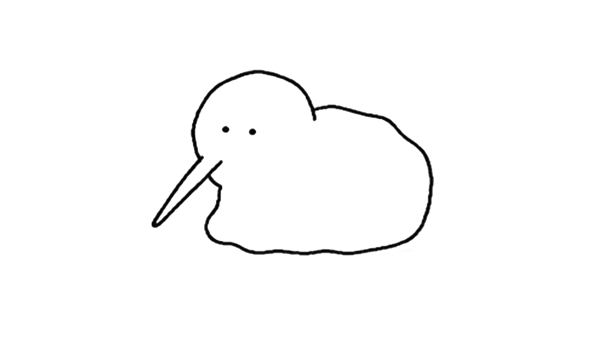
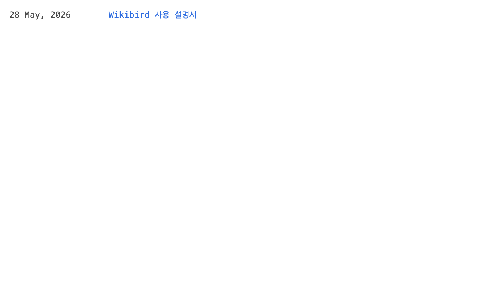
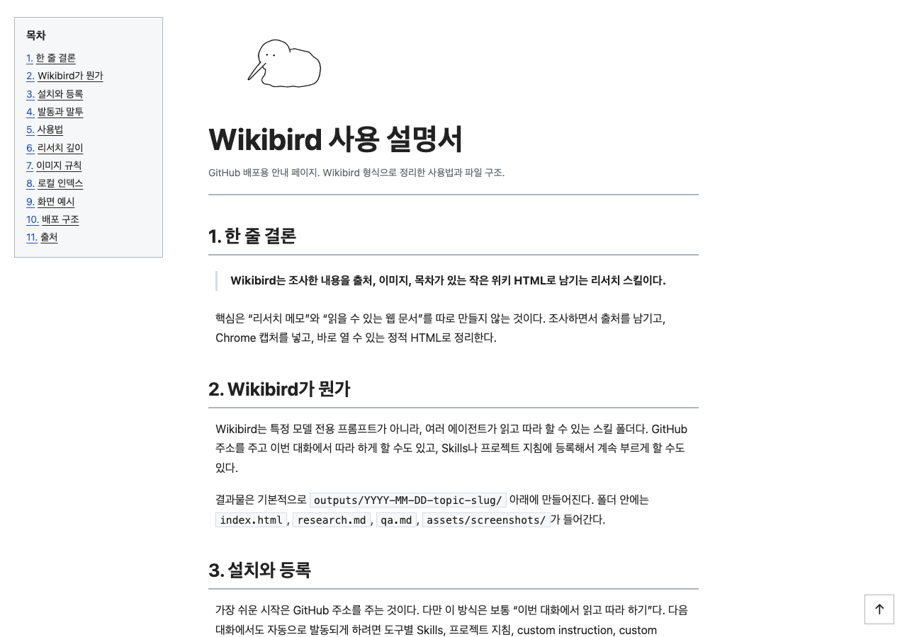

Wikibird 사용 설명서
1. 한 줄 결론
Wikibird는 조사한 내용을 출처, 이미지, 목차가 있는 작은 위키 HTML로 남기는 리서치 스킬이다.
핵심은 “리서치 메모”와 “읽을 수 있는 웹 문서”를 따로 만들지 않는 것이다. 조사하면서 출처를 남기고, Chrome 캡처를 넣고, 바로 열 수 있는 정적 HTML로 정리한다.
2. Wikibird가 뭔가
Wikibird는 특정 모델 전용 프롬프트가 아니라, 여러 에이전트가 읽고 따라 할 수 있는 스킬 폴더다. GitHub 주소를 주고 이번 대화에서 따라 하게 할 수도 있고, Skills나 프로젝트 지침에 등록해서 계속 부르게 할 수도 있다.
결과물은 기본적으로 outputs/YYYY-MM-DD-topic-slug/ 아래에 만들어진다. 폴더 안에는 index.html, research.md, qa.md, assets/screenshots/가 들어간다.
3. 설치와 등록
가장 쉬운 시작은 GitHub 주소를 주는 것이다. 다만 이 방식은 보통 “이번 대화에서 읽고 따라 하기”다. 다음 대화에서도 자동으로 발동되게 하려면 도구별 Skills, 프로젝트 지침, custom instruction, custom command 중 하나에 등록한다.
https://github.com/hyun2xyz/wiki_bird터미널형 에이전트에서는 repo 루트에서 설치 스크립트를 실행하는 방식이 가장 단순하다.
scripts/install-skill.sh codex
scripts/install-skill.sh claude
scripts/install-skill.sh all4. 발동과 말투
Wikibird 스킬이 활성화되면 일반 대화 답변 끝에 짹을 붙인다. 코드, 인용문, 출처 제목, 생성된 문서 본문 안에는 사용자가 따로 원하지 않는 한 넣지 않는다.
정리해 드릴게요 짹
완료했습니다 짹| 환경 | 쉬운 시작 | 계속 쓰는 방법 | 부르는 말 |
|---|---|---|---|
| ChatGPT / GPT | GitHub 주소를 주고 README.md, SKILL.md를 읽게 함 | Skills 업로드가 있으면 zip 업로드. 없으면 Custom Instructions나 프로젝트 지침에 핵심 규칙 붙이기 | “Wikibird로 조사해줘” |
| Codex | scripts/install-skill.sh codex | ~/.codex/skills/ 또는 프로젝트 AGENTS.md | Use $wikibird-research-html |
| Claude 앱 | GitHub 주소를 주고 이번 대화에서 따라 하게 함 | Skills 기능이 있으면 업로드. 없으면 Project knowledge나 custom instruction에 SKILL.md 넣기 | “Wikibird skill을 써줘” |
| Claude Code | scripts/install-skill.sh claude | ~/.claude/skills/ 또는 프로젝트 .claude/skills/ | “Use wikibird-research-html” |
| Gemini CLI | GitHub 주소나 SKILL.md를 읽게 함 | scripts/install-skill.sh gemini로 스킬 폴더와 /wikibird 명령을 같이 설치 | /wikibird 주제 |
5. 사용법
요청은 짧게 해도 된다. 다만 출력 위치와 깊이를 같이 말하면 결과가 훨씬 안정적이다.
$wikibird-research-html 써서 안드레 카파시를 조사해 주세요.
리서치 깊이: 상
출력 위치: outputs/2026-05-28-andrej-karpathy/
인물 기본 정보와 공개 프로필 이미지, 대표 작업 화면도 넣어 주세요.스킬이 학습된 환경에서는 더 짧게 불러도 된다.
위키버드로 써서 Typst 조사해줘출력 위치를 주지 않으면 repo 안의 outputs/ 아래에 날짜와 주제명으로 폴더를 만든다. 바탕화면을 기본 출력 위치로 쓰지 않는다.
6. 리서치 깊이
| 깊이 | 출처 | 이미지 | 쓰임 |
|---|---|---|---|
| 하 | 3-5개 | 1-2장 | 빠른 개요, 짧은 설명 |
| 중 | 6-10개 | 3-5장 | 기본 Wikibird 문서 |
| 상 | 10개 이상 가능하면 사용 | 5-8장 | 공부용 정리, 인물/회사/기술사, 복잡한 비교 |
Wikibird를 처음 등록하거나 처음 부를 때는 기본 리서치 깊이를 먼저 물어본다. 사용자가 깊이를 말하지 않고 바로 작업을 시키면 기본은 중으로 진행하고, 다음부터 바꿀 수 있다고 알려 준다.
7. 이미지 규칙
이미지는 장식이 아니라 확인용이다. 공식 문서, 제품 페이지, 논문 페이지, 강의 페이지, 최종 렌더 화면처럼 내용을 이해하는 데 도움이 되는 화면을 캡처한다.
인물 조사라면 얼굴이나 공개 활동을 확인할 수 있는 공식 프로필, 학교/회사 페이지, 강연 페이지를 우선한다. 다만 개인 사진, 로그인 화면, 유료 원문, 쿠키나 개인정보가 보이는 화면은 캡처하지 않는다.
8. 로컬 인덱스
repo 최상단의 index.html은 로컬 작업용 목록이다. outputs/ 아래에 만든 Wikibird 리서치 결과를 자동으로 모아 보여 준다.
node scripts/build-index.js
open index.html새 리서치를 만들거나 기존 리서치를 수정한 뒤에는 위 명령을 실행한다. 그러면 루트 index.html에 목록이 갱신된다. 실제 리서치 기록은 각 출력 폴더 안의 index.html을 로컬에서 열어서 확인한다.
9. 화면 예시
로컬 인덱스는 아주 짧은 목록이다. 날짜와 제목만 보고 원하는 리서치 결과로 들어가는 출발점이라고 보면 된다.

index.html. 로컬에서 생성된 Wikibird 결과를 모아 보여 준다.개별 리서치 결과는 각 폴더의 index.html을 연다. 여기에는 고정 목차, 본문, 캡처 이미지, 출처가 같이 들어간다.

outputs/2026-05-28-wikibird-manual/index.html 예시. Wikibird가 정리하는 위키 페이지 형태다.10. 배포 구조
GitHub에 공개되는 설명서는 이 파일, 즉 docs/index.html을 쓴다. 로컬 출력물 목록과 사용 설명서를 분리하면, 개인 작업 목록을 공개 페이지의 첫 화면으로 노출하지 않아도 된다.
GitHub Pages를 쓴다면 Pages source를 /docs로 지정하는 방식이 가장 단순하다.
11. 출처
- README.md, Wikibird repo 사용 설명.
- SKILL.md, Wikibird 스킬 본문.
- docs/research-html-workflow.md, 리서치 작업 흐름.
- docs/wiki-html-style-rules.md, 위키 HTML 스타일 규칙.
- OpenAI Help Center, Skills in ChatGPT.
- Anthropic Docs, Agent Skills in Claude Code.
- Anthropic Help Center, Use Skills in Claude.
- Gemini CLI Docs, Custom Commands.